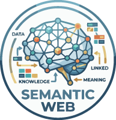

セマンティックWeb（Semantic Web）とは

- プロンプト例
セマンティックWebとは？
- セマンティックWeb（Semantic Web）とは、Web上の情報に「意味（セマンティクス）」を持たせて、コンピュータが理解・処理しやすくする仕組みのことです。
- 簡単に言うと、人間だけでなく、機械にも意味が分かるWebを目指す技術です。
ブラウザに情報を表示するためにはHTMLで記述する
- ブラウザに伝える内容を表示するためには、HTMLで記述する必要があります
- インターネット上に情報を発信しようとすれば、HTMLのルールを理解する必要があります
正しいHTMLを書く必要がある
- セマンティックWeb（semantic web）：1998年にティム・バーナーズ・リー氏によって提唱された技術であり、「情報リソースに意味（セマンティック）を付与することで、人を介さずに、コンピュータが自律的に処理できるようにするための技術」と定義されている

従来のWebとの違い
従来のWeb
- 主に 人間が読むための情報
- コンピュータには「文字列」としてしか認識されない
【例】
東京は日本の首都です。
→ コンピュータには単なる文字の並び
セマンティックWeb
- データの意味・関係性を明示的に記述
- コンピュータが「意味」を理解できる
【例】
東京 → 首都 → 日本
→ 「東京は日本の首都」という関係を機械が理解
🔹 何ができるようになる？
セマンティックWebにより、以下が可能になります：
- 🔍 高度な検索
👉️ 意味を理解して探せる（例：「東京の人口」→ 正確な数値を取得）
- 🤖 AI・自動処理の高度化
👉️ 推論・自動判断が可能
- 🔗 異なるデータ同士の自動連携
- 📊 知識グラフの構築
🔹 主要な技術要素
セマンティックWebは次のような技術で構成されています。
| 技術 | 役割 |
|---|---|
| RDF (Resource Description Framework) | データを「主語‐述語‐目的語」で表現 |
| OWL (Web Ontology Language) | データの意味・関係を厳密に定義 |
| SPARQL (SPARQL Protocol and RDF Query Language) | RDFデータ用の検索言語 |
| URI (Uniform Resource Identifier) | 世界共通の識別子 |
🔹 具体例（超簡単）
「太郎は学生で、東京大学に通っている」
【RDF風に書くと】
太郎 → 職業 → 学生
太郎 → 所属 → 東京大学
👉️ コンピュータが「太郎は学生で、大学生だ」と 論理的に推論 できる。
🔹 実際の利用例
- Google検索（ナレッジグラフ）
- AIアシスタント（Siri, Alexaなど）
- 医療データ連携
- 研究データベース
- スマートシティ
🔹 一言まとめ
セマンティックWeb =「意味を理解できるWeb」